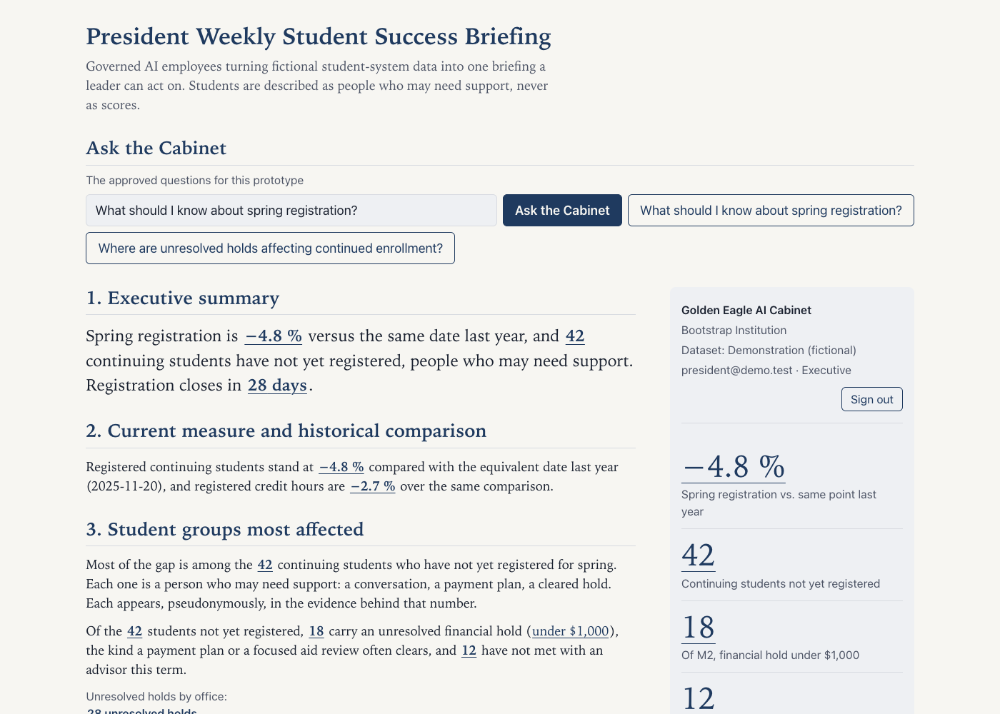
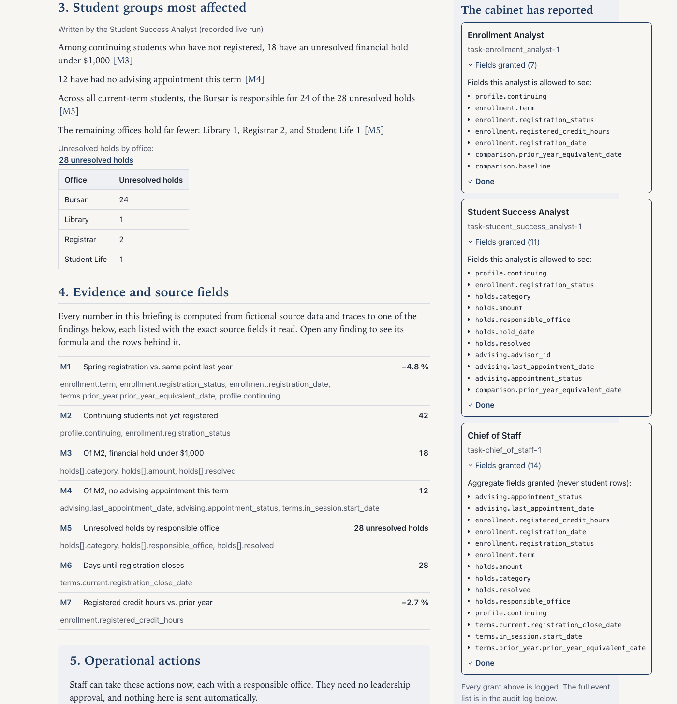
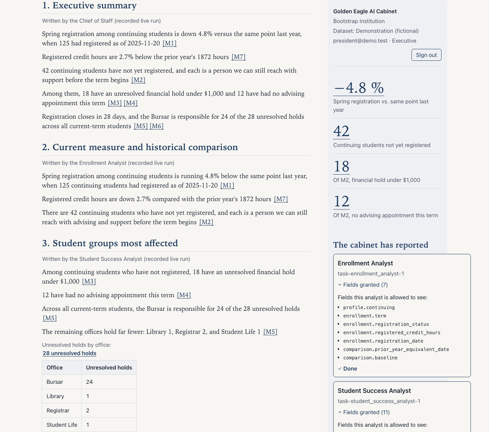
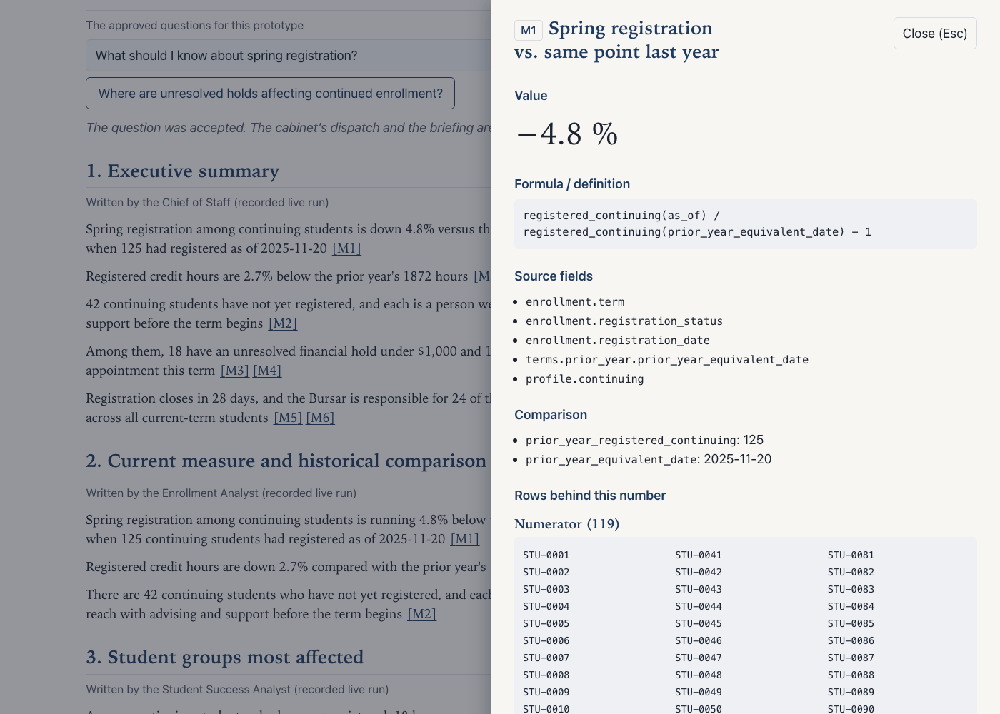
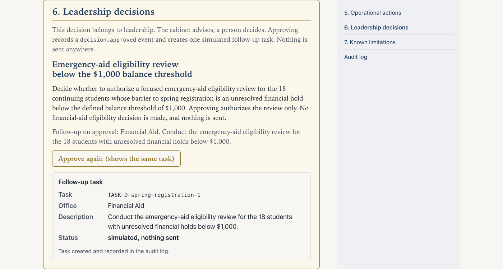
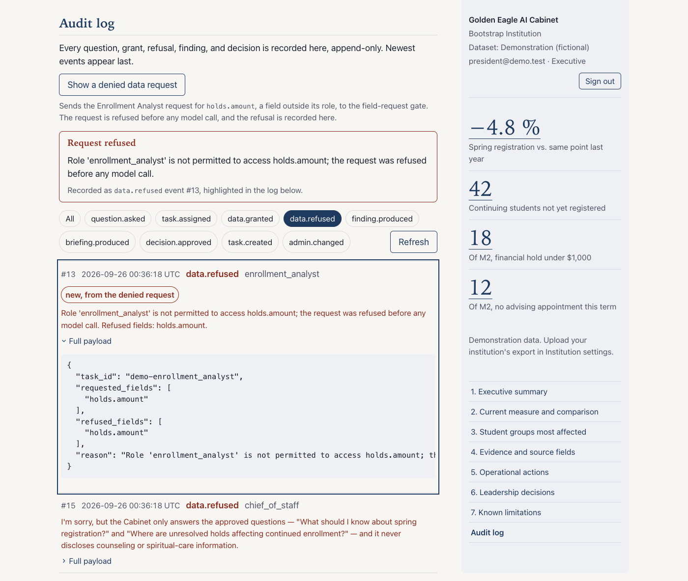

Golden Eagle AI Cabinet
Backup deck for the four-minute live demo
This file is the fallback for two failures: the demo app will not start, or the
room has no network. It needs nothing but this file and the
screenshots/ folder beside it. Every image was captured from the real
running app, and every spoken line is the frozen demo script, word for word.
How to present with it
- Press → or click Start to begin. The timer starts on that first advance.
- Read the quoted line on each slide out loud, then advance with → or ←.
- The header shows the time spent on the current beat against its window. It turns amber when the window is exceeded. If a beat runs long, skip the details, keep the sentence, and never drop Beat 6.
- The full run is four minutes across six beats, 0:00 to 4:00.
On screen: The sign-in screen, then the briefing shell. The masthead names the signed-in president, and a single question field sits beside the approved-question buttons.

Say “Every fall, a president asks a simple question. What should I know about spring registration? Today the answer lives in six spreadsheets and three inboxes. This is the Golden Eagle AI Cabinet, governed AI employees that turn student-system data into one briefing a leader can act on. Watch what happens when I ask.”
On screen: The Chief of Staff accepts the question and dispatches two tasks, one to the Enrollment Analyst, one to the Student Success Analyst. Each task card shows the exact fields that analyst is allowed to see. An audit event appears for each grant.

Say “The Chief of Staff does not answer itself. It assigns the work. The Enrollment Analyst gets enrollment numbers, and nothing else. The Student Success Analyst gets holds and advising, and nothing else. Every field granted is logged, and as you will see in a minute, every field refused is logged too. These are employees with job descriptions, not a chatbot with the database password.”
On screen: The executive briefing renders, seven sections in the proposal's order. 1. executive summary, 2. current measure and historical comparison, 3. student groups most affected, 4. evidence and source fields, 5. operational actions, 6. leadership decisions, 7. known limitations, missing data, or conflicting definitions. The operational actions and the leadership decisions are visually separated.

Say “Here is the briefing. Spring registration is down 4.8 percent versus the same date last year. Forty-two continuing students have not registered. These are not risk scores. They are forty-two people who may need support. Of the forty-two, eighteen have a financial hold under a thousand dollars, the kind a small grant or a payment plan often clears, and twelve have not met with an advisor this term. Below, the cabinet separates the operational actions, Student Success reviews the students with no advising contact, Financial Aid reviews the small-balance cases, from the one decision that belongs to leadership. Every number on this page traces to a row in the data, and I will prove that next.”
On screen: The presenter opens the evidence drawer on the 4.8 % claim. The drawer shows the source fields, the formula, and the rows behind the number.

Say
“Pick any number. I will take the headline. Here is the formula, the exact fields it read,
and the one hundred nineteen students behind the numerator and the one hundred twenty-five
behind the denominator. Anyone can count these by hand from the raw data, and
data/VERIFY.md lists them. The AI explains the numbers. It is never allowed to
invent one. A test extracts every numeral in this briefing and fails the build if it is not
in the data.”
On screen: The decision panel. The leadership decision, whether to authorize a focused emergency-aid eligibility review for students below a defined balance threshold, stated separately from the operational actions, with an Approve button.

Say “The cabinet advises. The president decides. Approving authorizes the eligibility review, not an aid decision, which stays out of scope, and sends it to Financial Aid as a follow-up task, simulated, because nothing here ever emails a student or touches a record. The approval itself becomes part of the record.”
On screen: The audit log view. The full event list, question.asked, task.assigned, data.granted, finding.produced, briefing.produced, decision.approved, task.created, and two data.refused events. First, the Enrollment Analyst's task requested hold.amount and was denied before any model call. Second, the out-of-scope question.

Say “Finally, the part I built first. One of the analysts asked for a field outside its role, hold amounts, and was refused before any model was called. And when I ask something outside the approved use case, which students are in counseling, the cabinet refuses in plain words, and the refusal is recorded. The counseling fields exist in this fictional data precisely so that refusal is real. Governed AI is not a promise. Here, it is the architecture. Thank you.”